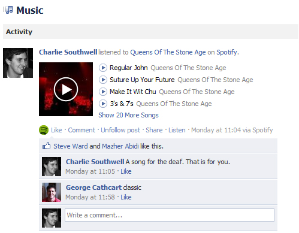

Fashion
Music and audio can be used as a means of fashion and therefore expression. Wearing headphones for some people is all about the brand and looking like a music junkie, not necessarily what the headphones sound like. Some people like to broadcast on social media through what music they're listening to, showing off their music preferences. Even though audio/sound is about hearing, it has now also developed a "look".
Considering music as a fashion really turns sound and its fundamentals on its head, taking us from the sense of hearing to a visual sense of what we see. Sound as a fashion can take on many forms - anything from wearing iconic Beats headphones (pictured right) around one's neck even when they're not playing anything, to wearing band t-shirts - and while it doesn't really have an actual audio component, these types of fashion couldn't have come about without the role of sound and music being what they are in our lives.

Spotify is a popular online music streaming service. As seen in the photo above, Spotify gives users the options to publish what they're listening to on social media, giving another perspective of this concept of music being a defining outer characteristic of ourselves more than just being something personal and private.